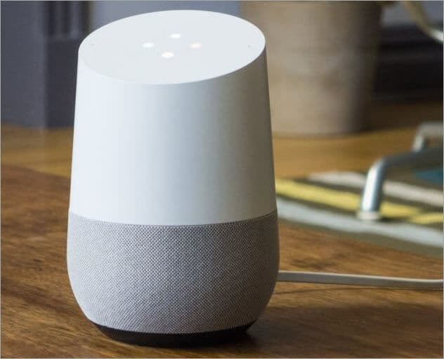

Internet of Things
The Internet of Things is changing many aspects of our lives. They can provide real-time data acquisition and tracking technology and allow us to automate tasks,
streamline processes, improve efficiency, and increase our health and safety when used appropriately. They are integrated with the ability to communicate and interact
over the internet and can sometimes be controlled and managed remotely when required.
Here are some examples of IoT devices:
Google X's Smart Contact Lenses
Google's experimental smart lenses incorporate a glucose sensor, antenna, capacitor and chip between two layers of lenses. The lens broadcasts its data to a nearby device
on a certain radio frequency using RFID.
The purpose of these smart lenses is to check glucose levels. This can help people with diabetes, as they wouln't have to manually check their glucose levels.
There are security concerns, however. The data could be modified, or it could even be wrong, and then the patient might get the wrong amount of insulin. Google says that
the data would not be added to the company’s banks of personal information, and data transferred from the lens cannot be manipulated.
Google Home
Google Home allows its users to perform a wide variety of tasks using nothing but their voice, such as
- Control TV and speakers
- Play music and other media
- Manage timers and alarms
- Recieve the weather and news updates
- Calling / messaging people
Google Home is always listening for you to say "OK Google". Once it hears that, it will start recording, and store your voice recording in Google's servers. You can even go into your Google Activity and listen to its recordings. An algorithm will interperet your voice and actually show you advertisements based on what you are talking about. There isn't a real person constantly listening through your Google Home, however the recordings are in your Google Account, and thus can be accessed by anyone who hacks into your account, or even by Google themselves if they had the need to. 
Bitdefender BOX
This device is designed to protect your entire network from threats. It connects directly to your modem / router and protects all connected devices from attacks,
even if those devices don't have any built-in protection. You can also view every device ever connected to your internet and view detailed traffic reports.
It also comes with a VPN and enchanced internet security for all devices, including IoT devices such as fridges and even light bulbs.